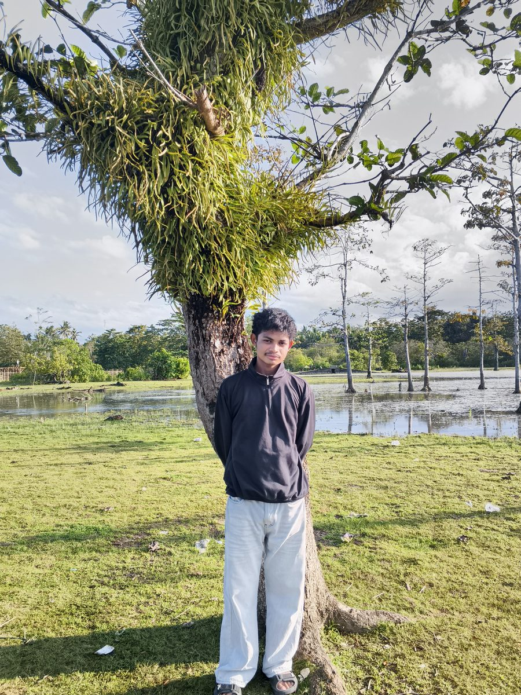

Jasa Elektronik & Teknik
Merangkai Ide,
Merangkai Ide,
Menyalakan Solusi.
ADAN PROJECT membantu mewujudkan rangkaian, PCB, dan alat elektronik — dari sketsa awal di kertas sampai unit yang siap dipakai, dikerjakan dengan pendekatan teknik yang presisi.
Layanan Utama
Tiga jalur yang kami kerjakan.
Rangkaian
Desain Rangkaian Elektronik
Perancangan skematik dan simulasi rangkaian, dari analog dasar sampai sistem berbasis mikrokontroler.
PCB
Desain & Fabrikasi PCB
Layout PCB siap produksi, pemilihan komponen, dan pendampingan proses fabrikasi hingga jadi.
Prototipe
Pembuatan Alat & Prototipe
Realisasi alat fungsional untuk tugas akhir, riset, atau kebutuhan lapangan — siap uji dan siap pakai.
Profil

PengelolaAdan
Siapa di balik ADAN PROJECT
ADAN PROJECT dikelola secara perorangan dengan latar belakang teknik elektro, fokus pada pekerjaan yang membutuhkan ketelitian: dari perhitungan rangkaian sampai hasil akhir yang rapi dan terdokumentasi.
| Pengelola | Adan |
| Latar Belakang | Teknik Elektro, Universitas Halu Oleo |
| Fokus Layanan | Rangkaian, PCB, dan alat elektronik custom |
| Cara Kerja | Konsultasi → Desain → Realisasi → Uji & Serah Terima |
| Jangkauan | Luring & daring (konsultasi jarak jauh tersedia) |
Mulai Proyek
Isi Form Pemesanan